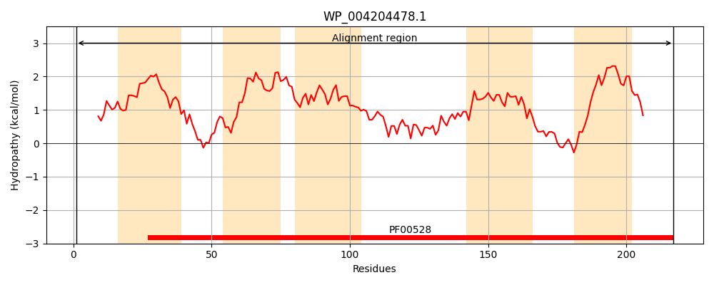
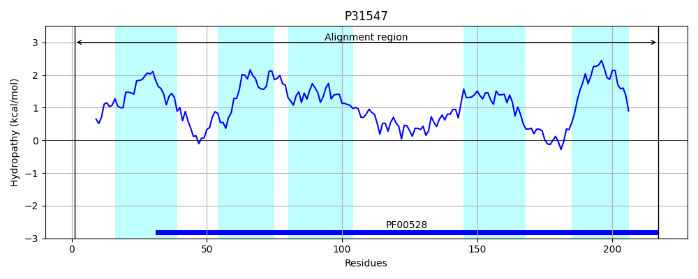
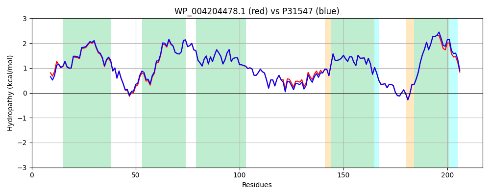

Hit Accession: P31547
Hit TCID: 3.A.1.24.1
Hit Description: gnl|BL_ORD_ID|9776 gnl|TC-DB|P31547|3.A.1.24.1 D-methionine transport system permease protein MetI - Escherichia coli.
Mach Len: 217
e:0.000000
Query TMS Count : 5
Hit TMS Count: 5
TMS-Overlap Score: 5.550000
Predicted Substrates:CHEBI:6829;methionine
BLAST Alignment:
Score: 1045 , Bit scores: 407 bits, E-value: 7.8e-147, Alignment length: 217, Percentage identity: 96
Query: 1 MSEAMMWLLLRGVWETLAMTFVSGFFGFVLGLPVGVLLYVTRPGQIVANAKLYRTLSALVNIFRSIPFIILLVWMIPFTRVIVGTSIGLQAAIVPLTVGAAPFIARMVENALLEIPTGLIEASRAMGATPLQIVRKVLLPEALPGLVNAATITLITLVGYSAMGGAVGAGGLGQIGYQYGYIGYNATVMNTVLVLLVILVYLIQFSGDRIVRAVTHK 217
MSE MMWLL+RGVWETLAMTFVSGFFGFV+GLPVGVLLYVTRPGQI+ANAKLYRT+SA+VNIFRSIPFIILLVWMIPFTRVIVGTSIGLQAAIVPLTVGAAPFIARMVENALLEIPTGLIEASRAMGATP+QIVRKVLLPEALPGLVNAATITLITLVGYSAMGGAVGAGGLGQIGYQYGYIGYNATVMNTVLVLLVILVYLIQF+GDRIVRAVT K
Sbjct: 1 MSEPMMWLLVRGVWETLAMTFVSGFFGFVIGLPVGVLLYVTRPGQIIANAKLYRTVSAIVNIFRSIPFIILLVWMIPFTRVIVGTSIGLQAAIVPLTVGAAPFIARMVENALLEIPTGLIEASRAMGATPMQIVRKVLLPEALPGLVNAATITLITLVGYSAMGGAVGAGGLGQIGYQYGYIGYNATVMNTVLVLLVILVYLIQFAGDRIVRAVTRK 217 | Protein Hydropathy Plots: |
|---|
|  |  |
Pairwise Alignment-Hydropathy Plot:
|
|---|
|  |